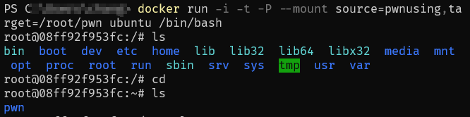
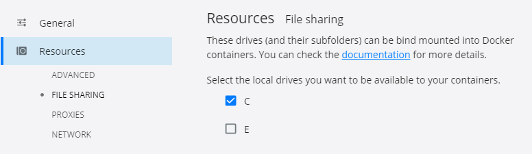
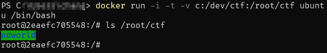

因为受疫情影响，不得已只能在笔记本上搭建pwn的环境，然而这笔记本只有一块120GB的固态，Windows要上课和做作业所以不能丢，只好清一下空间之后划了40GB给新装的Ubuntu。随后问题就来了，因为手头只有Windows版的IDA，想要在Ubuntu用的话就只能开个win的虚拟机了，所以整了个Win10的虚拟机，然后就报磁盘不足500MB的警告了，环境也配好了，反正不再装什么了，所以将就用了许久。
今日发现可以在Windows下用Docker开个Ubuntu的容器来做题，既然也是用不到GUI，加之Windows的空间也不够了，所以打算来学习一下Docker并替换掉Ubuntu。
新手教程
Docker的简介以及安装教程等在网上都有很多了，这里就不搬过来再水一遍了，贴两个觉得挺好的：
Docker Documentation
这里面关于完整的下载安装都有提到，跟着教程走就行。
在安装好Docker Desktop之后，新开一个Ubuntu的容器，因为镜像被简化过，所以容器里是没有带文本编辑器的，鉴于操作冗长就不逐行命令讲了，只贴一下后来写的Dockerfile：
1 | FROM ubuntu #采用Ubuntu镜像进行下面的操作 |
一点小问题
在写完这个Dockerfile实际跑的时候，发现第三句指令 echo -e "deb... 在实际运行的时候将参数 -e 也写进sources.list里了，导致后续的 apt update 报错并构建镜像失败。Google之后，在这个提问里找到了回复，导致这个问题的具体原因就是docker默认使用的是 sh 这个shell，而这个shell在运行指令时直接将 echo 后面的内容全部写进文件里了，在语句前加个 bash -c 就可以使用bash运行这条指令，注意这里因为使用了 -c 参数，在传入指令时要使用单引号将指令括起来。
保存容器中的文件
容器运行时产生的文件和数据都是存放在Docker多层存储结构中的一层，镜像是由多个层的文件构成的，在启动容器时，Docker在镜像的多层基础上又新开了一层提供给容器使用，因此这个层里存储的文件生命周期是跟随该容器的，会在容器被删除时一起删除。所以为了永久化保存容器使用中产生的部分文件，我们需要使用数据卷或者挂载主机目录。
使用数据卷
数据卷在Docker中是一个特殊的存储层，可以供多个容器使用，也因此其生命周期独立于容器，不会随着容器的删除而被删除。数据卷的使用采用的是挂载的方式，和后续提及的对主机目录的挂载是一样的。下面讲一下具体如何使用数据卷保存容器中的文件。
首先，通过 docker volume create ctf 创建一个叫 ctf 的数据卷；
然后，使用创建容器 docker run -i -t --mount source=pwnusing,target=/root/pwn ubuntu /bin/bash ，该指令创建了一个使用 ubuntu 镜像的容器，并挂载了数据卷 pwnusing 到容器的 /root/pwn 目录下，其余的参数跟普通的创建容器一致，只是加了 --mount 完成挂载而已。

挂载主机目录
对于主机目录的挂载和上述的使用数据卷进行挂载基本一致，挂载目录之后可以在主机上看到容器对目录中文件的修改。
首先，在Docker Desktop的设置中找到FileSharing一项，勾上要挂载的主机上的盘符，保存设置。

然后，使用命令 docker run -i -t -v c:/dev/ctf:/root/ctf ubuntu /bin/bash 创建一个ubuntu的容器，并将主机的 c:/dev/ctf 目录挂载到容器的 /root/ctf 下。其中，-v 参数的含义为 主机目录:容器中目录 。至此就完成了主机目录的挂载。

容器和虚拟机的区别
因为是跟着教程走的，一心想着只要在容器里搭个环境就好，于是开始的时候并没有写Dockerfile，而是像配置实体机一样一步步装，等装好了会过来看剩下的教程的时候才知道容器和虚拟机的区别，这里讲一下我的理解。
常见的VMware和VBox这类虚拟机是在原有的宿主机上又模拟了一套硬件，并通过使用通常的系统镜像安装系统，安装系统的过程基本与物理机上安装无异；而Docker则通过与宿主机共用一个系统内核的方式进行“虚拟”，使用的镜像也完全不同，启动容器的过程更像是启动一个程序。
为什么会有这么大的区别呢？原因在于Docker并不需要对硬件进行模拟，也不需要给每个容器再专门运行一个内核，通过将容器中的进程直接在宿主机的内核上运行的方式，减少了大量的性能开销，并且使得镜像里不用存放系统内核，只保留用户空间就可以使用，大幅减小了镜像的大小，也使得容器的运行更加的轻便。
写在最后
在用Docker之后基本就不需要Ubuntu了，而且占用的存储空间也更加小，打包成镜像后只占用了743MB的空间，虽然博客还是要从Ubuntu发布。总的来说，对于只使用命令行而不需要图形化界面的需求来说已经是完全足够且好用的了。一开始还想借此机会对比一下Windows的WSL，后来想起来WSL的系统是64位的，要跑32位的一些功能的话还要安装32位的依赖，因为尝试过一次，其复杂程度实在劝退，所以直接作罢，Docker作为SubSystem真的没WSL啥事了。